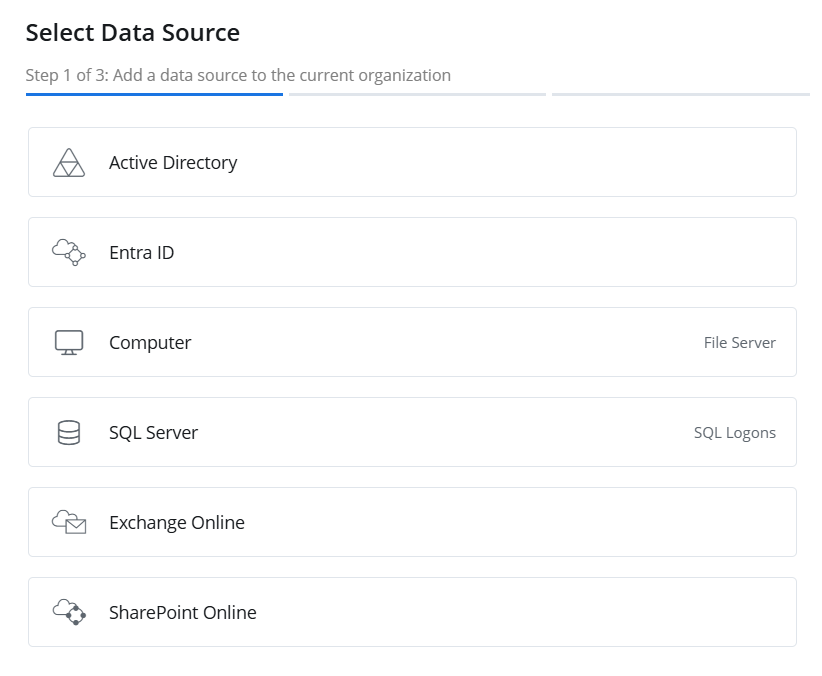
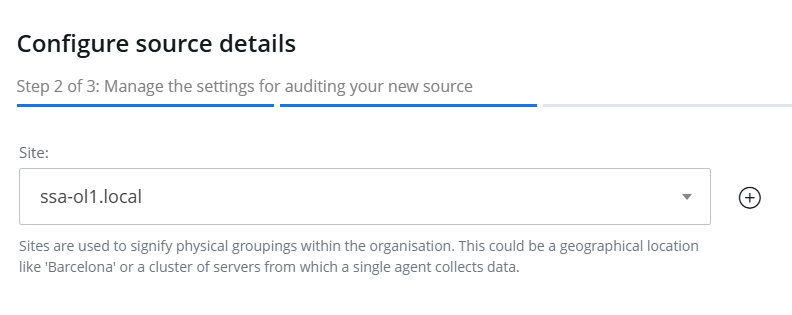
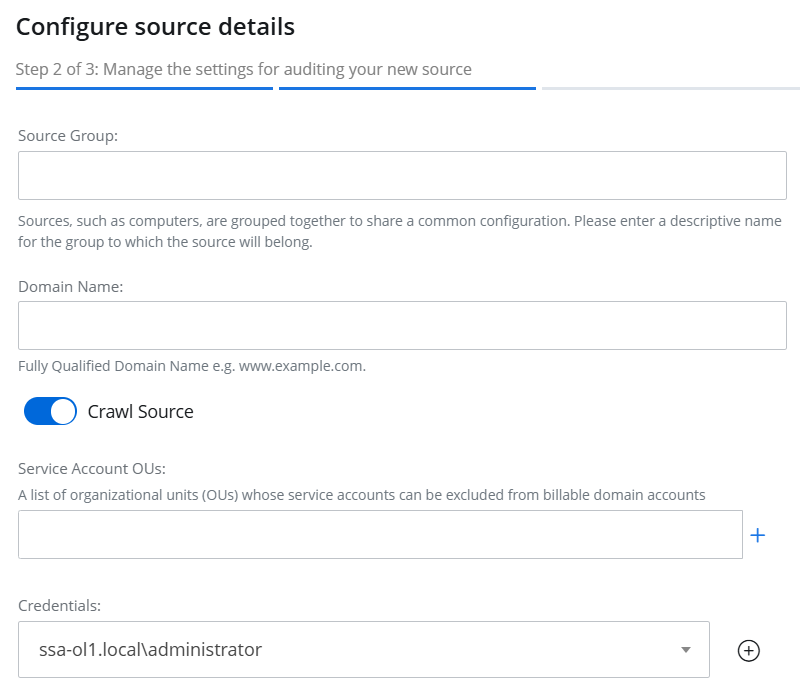
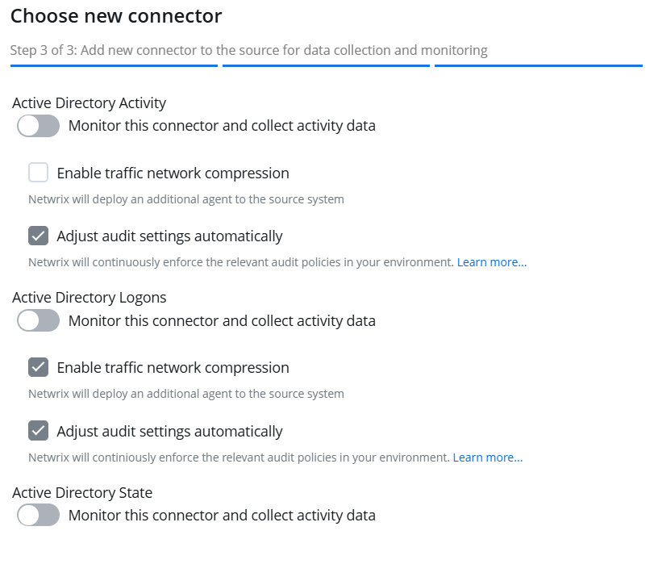

Add a Source and Connectors for Active Directory
Follow the steps to add an Active Directory data source and connector(s) to your organization. Click Configuration in the top bar. The Managed organizations page is displayed, that lists the managed organizations defined in {{ ProductName_Overlord }}. Click an organization to define a data source and connector(s) for it. The properties page for the organization is displayed with the Sources tab selected by default. On the Sources tab, click Add to add a source. The Select Data Source (Step 1 of 3) pane is displayed. 
Select Active Directory and click Next. On the Configure source details (Step 2 of 3) pane, use the Site drop-down menu to select an existing site or add a new one. To add a new site, select the Add new site option from the drop-down menu or click the Add icon.
- When you choose to add a new site, you have to provide a name for it in the New site name field. Then click Next to proceed with configuring the agent for the site. See the Install Agent) topic for details on configuring the agent, starting at Step 6.
-
When you select an existing site from the drop-down menu, one of the following happens:
- If the agent has not been configured for the site, the system will proceed with the agent configuration when you click Next. See the Install Agent) topic for details on configuring the agent, starting at Step 6.
- If the agent has already been configured for the site, the system will proceed with the Active Directory source and connector settings when you click Next.
Click Next.
Specify the following settings:
- Source Group – Specify a name for the group to which the data source will belong. Grouping sources, such as computers, allows them to share a common configuration and makes it easier to manage related sources together.
- Domain Name – Specify the fully qualified domain name of the Active Directory domain you want to create a source for.
- Crawl Source – Toggle this option to ON to enable data collection for the source.
- Service Account OUs – Specify organizational units (OUs) to exclude their service accounts from billable domain accounts so that they are not audited. To specify an organizational unit (OU), enter its name and click the Add icon. To specify multiple organizational units, add them one by one.
-
Credentials – Displays the crdentials that have already been added, while also providing the option to add new credentials. {{ ProductName_Overlord }} uses these credentials to connect to the data source. You can select existing credentials or add new ones. To add new credentials, select Add new Credentials from the drop-down menu or click the Add icon, then specify the following:
- Password – The password of the Active Directory account
- Display Name – Specify a name you want to show for your credentials. It will be displayed on the Credentials tab of the Managed Organizations page.
Click Next.
The Choose new connector (Step 3 of 3) pane lists three connectors for Active Directory. Specufy the following:
- Active Directory Activity – Toggle the Active Directory Activity switch to ON to collect and monitor data for this connector. With this, you can generate activity reports on Active Directory data. See the Active Directory topic for additional information.
- Activity Directory Logons – Toggle the Active Directory Logons switch to ON to collect and monitor data for this connector. With this, you can generate logon reports on Active Directory data. See the Active Directory topic for additional information.
- Activity Directory State – Toggle the Active Directory State switch to ON to collect and monitor data for this connector. With this, you can generate state-in-time reports on Active Directory data. See the State In Time Risks Reports topic for additional information.
Optionally, select the following for each
-
Enable traffic network compression – Select this checkbox to enable traffic network compression for the connector. See the Network Traffic Compression) topic for additional information. If Netwrix Auditor and {{ ProductName_Overlord }} audit the same domain, make sure that the network traffic compression service is enabled for only one of the products or neither product for any of the audited services. It cannot be enabled for both products.
-
Adjust audit settings automatically – Select this checkbox to adjust the audit settings automatically. With this approach, 1Secure will check your current audit settings at each data collection session and adjust them if
<madcap:annotation madcap:createdate="2025-02-19T11:54:34.3716386+05:00" madcap:creator="HassaanKhan" madcap:initials="HA" madcap:comment="Need to work on finding the kind of automatic audit settings " madcap:editor="AyeshaAzeem" madcap:editdate="2025-02-19T13:19:30.6777656+05:00">C</madcap:annotation>lick **Finish**.
The Active Directory data source and connector(s) have been configured.